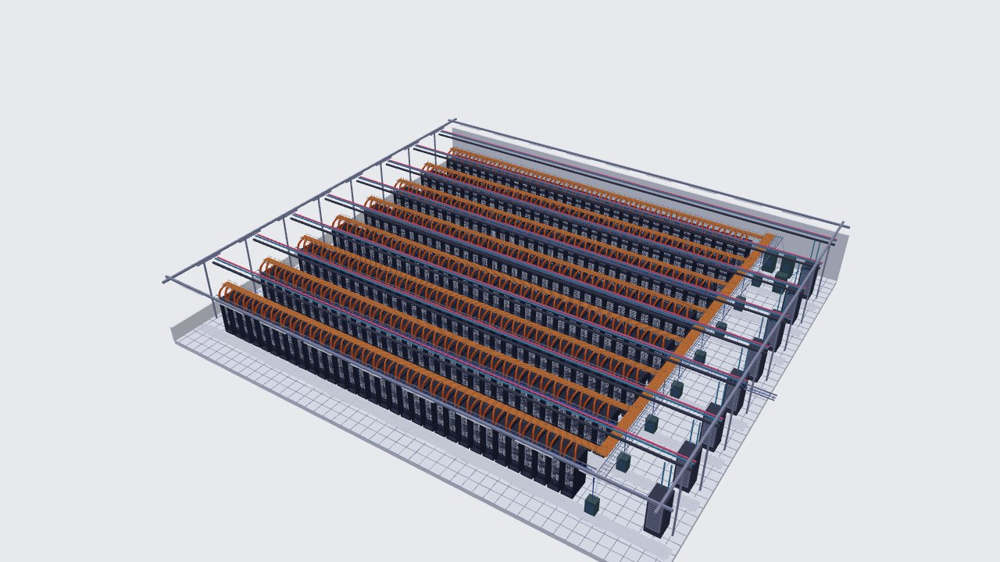

Prover makes a claim that is checked by the verifier.
The claim in this demo:
- Only approved model X is being used to serve inference
- It is checked with zero-knowledge proofs, so the verifier never holds the model
Amodo Design | www.ai-verification.com